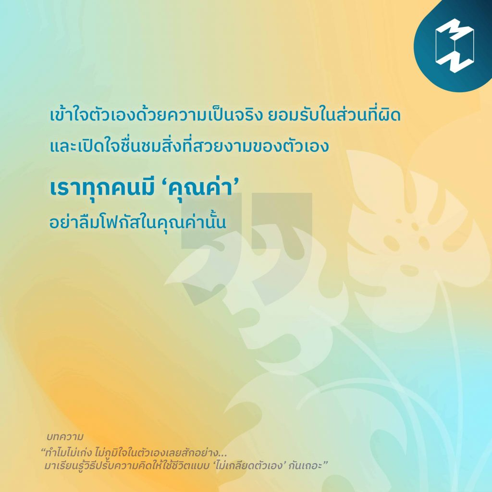

11)“เราทุกคนมี ‘คุณค่า’”
“เข้าใจตัวเองด้วยความเป็นจริง ยอมรับในส่วนที่ผิด และเปิดใจชื่นชมสิ่งที่สวยงามของตัวเอง เราทุกคนมี ‘คุณค่า’ อย่าลืมโฟกัสในคุณค่านั้น” ทำไมเราถึงไม่มีอะไรดีสักอย่าง? ทำไมคนอื่นถึงเก่งกว่าเรา? ทำไมเราถึงไม่มั่นใจในตัวเองเลย? คำถามเหล่านี้ที่เราเผลอคิดวนไปวนมาในหัวอาจพาลทำให้เรา “เกลียดตัวเอง” โดยไม่รู้ตัว มาเรียนรู้ที่จะรับมือกับความรู้สึกเกลียดชังในใจ ก่อนจะสายเกินไปกันเถอะนะ ติดตามอ่านบทความ “ทำไมไม่เก่ง ไม่ภูมิใจในตัวเองเลยสักอย่าง…มาเรียนรู้วิธีปรับความคิดให้ใช้ชีวิตแบบ ‘ไม่เกลียดตัวเอง’ กันเถอะ”